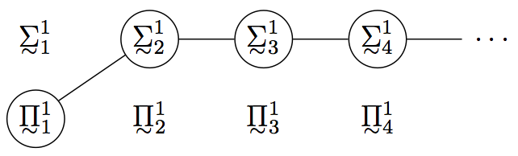
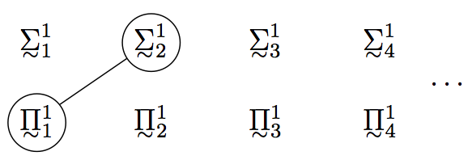

Large Cardinals and Determinacy
The developments of set theory in 1960's led to an era of independence in which many of the central questions were shown to be unresolvable on the basis of the standard system of mathematics, ZFC. This is true of statements from areas as diverse as analysis (“Are all projective sets Lebesgue measurable?”), cardinal arithmetic (“Does Cantor's Continuum Hypothesis (CH) hold?”), combinatorics (“Does Suslin's Hypotheses hold?”), and group theory (“Is there a Whitehead group?”).
These developments gave rise to two conflicting positions. The first position—which we shall call pluralism—maintains that the independence results largely undermine the enterprise of set theory as an objective enterprise. On this view, although there are practical reasons that one might give in favour of one set of axioms over another—say, that it is more useful for a given task—, there are no theoretical reasons that can be given; and, moreover, this either implies or is a consequence of the fact—depending on the variant of the view, in particular, whether it places realism before reason, or conversely—that there is no objective mathematical realm at this level. The second position—which we shall call non-pluralism—maintains that the independence results merely indicate the paucity of our standard resources for justifying mathematical statements. On this view, theoretical reasons can be given for new axioms and—again, depending on the variant of the view—this either implies or is a consequence of the fact that there is an objective mathematical realm at this level.
The theoretical reasons for new axioms that the non-pluralist gives are quite different that the theoretical reasons that are customarily at play in mathematics, in part because, having stepped into the realm of independence, a more subtle form of justification is required, one that relies more heavily on sophisticated mathematical machinery. The dispute between the pluralist and the non-pluralist is thus one that lies at the intersection of philosophy and mathematics—on the one hand, it is intimately connected with some of the central questions of philosophy of mathematics, such as the question of realism and the nature of justification; on the other hand, it addresses these questions in a manner that is sensitive to a great deal of sophisticated mathematics.
The debate between the pluralist and the non-pluralist is really a hierarchy of debates. At the one extreme there is pluralism with regard to all of mathematics and at the other extreme there is non-pluralism with regard to all of mathematics. The intermediate positions (which are much more common) involve embracing non-pluralism for certain domains (say first-order arithmetic), while advocating pluralism with regard to others (say those where the notion of the full powerset enters the picture). Fortunately, the mathematical systems that arise in practice can be arranged in a well-founded hierarchy—ranging from weak systems like Robinson's arithmetic Q, up through Peano arithmetic PA, the subsystems of second-order arithmetic, the subsystems of set theory, and the hierarchy of large cardinal axioms. One can thus arrange the hybrid non-pluralist/pluralist positions and the corresponding debates in a well-founded hierarchy, where along the way one embraces more and more non-pluralism. The challenge for those with non-pluralist tendencies is to make the case that non-pluralism extends further and further into the upper reaches of higher mathematics. The challenge for those with pluralist tendencies is to draw the line in a principled manner and make the case that no argument for non-pluralism will succeed for the domains of mathematics beyond that line.
It is sensible to approach the search for new axioms and the question of pluralism in a stepwise fashion, seeking first axioms that resolve certain low-level questions and making the case for non-pluralism at that level, and then proceeding upward to questions of greater complexity and the question of pluralism at higher levels. The present entry focuses on this debate as it takes place in the setting of classical descriptive set theory. There are three reasons for this choice. First, a popular view embraces non-pluralism for first-order arithmetic but rejects the search for new axioms for full second-order arithmetic and set theory and embraces pluralism at these levels.[1] The questions of descriptive set theory are important in this connection since many of them are statements of second-order arithmetic which are independent of the standard axioms, ZFC. It thus represents a critical juncture in the debate between the pluralist and non-pluralist. Second, here the mathematical landscape with regard to the implications of new axioms has largely stabilized and we now have the resources required to address the issue between the pluralist and the non-pluralist. (In the case of questions of third- and higher-order arithmetic the matter still awaits further mathematical developments. That topic is treated in the entry “The Continuum Hypothesis”.) Finally, the case for new axioms at this level involves so-called “extrinsic justifications” (something we shall describe below) and, moreover, provides the strongest current example of such justifications.
Here is an overview of the present entry: Section 1 provides further philosophical motivation and sharpens the question of pluralism by briefly discussing the interpretability hierarchy, the incompleteness phenomenon, and the nature of axioms. Section 2 describes the central notions and results of classical descriptive set theory along with the independence results concerning the questions that remained open and were ultimately shown to be unresolvable on the basis of the standard axioms, ZFC. Section 3 describes the two main approaches to new axioms—axioms of definable determinacy and large cardinal axioms—and discusses the implications of these axioms for the undecided questions of classical descriptive set theory. Section 4 treats of the intimate relationship between the two approaches and outlines the case that has been made for axioms of definable determinacy and large cardinal axioms. Section 5 revisits the debate between the pluralist and the non-pluralist in light of the foregoing mathematical developments.
- 1. Philosophical Motivation
- 2. Classical Descriptive Set Theory
- 3. Determinacy and Large Cardinals
- 4. The Case for Definable Determinacy
- 5. Philosophical Discussion
- Bibliography
- Academic Tools
- Other Internet Resources
- Related Entries
1. Philosophical Motivation
One way to sharpen the question of pluralism involves appeal to the interpretability hierarchy. In this section we will (1) introduce the interpretability hierarchy, (2) briefly discuss the incompleteness phenomenon, (3) sharpen the question of pluralism, and (4) bring out the philosophical issues involved by briefly discussing the nature of axioms and the nature of justification in mathematics.
1.1 Interpretability Hierarchy
Suppose T1 and T2 are recursively enumerable axiom systems. We say that T1 is interpretable in T2 (T1 ≤ T2) when, roughly speaking, there is a translation τ from the language of T1 to the language of T2 such that, for each sentence ϕ of the language of T1, if T1 ⊢ ϕ then T2 ⊢ τ(ϕ). We shall write T1 < T2 when T1 ≤ T2 and T2 ≰ T1 and we shall write T1 ≡ T2 when both T1 ≤ T2 and T2 ≤ T1. In the latter case, T1 and T2 are said to be mutually interpretable. The equivalence class of all theories mutually interpretable with T is called the interpretability degree of T. The interpretability hierarchy is the collection of all theories ordered under the relation ≤.
There is a useful characterization of the relation ≤ that applies when it is restricted to the type of theories that we will be considering. To describe this we need a few more notions. A theory T is reflexive provided it proves the consistency of each of its finite fragments, it is Σ01-complete provided it proves each true Σ01-statement, and it is Σ01-sound provided it does not prove a false Σ01-statement. Let ‘T1 ⊆Π01 T2’ be shorthand for the statement that all Π01-sentences provable in T1 are provable in T2. The following characterization of interpretability is central to the theory of interpretability: If T1 is reflexive and Σ01-complete, then
T1 ≤ T2 iff T1 ⊆Π01 T2.
This result is due to Orey and Hájek (for further details see Theorem 6 on p. 103 of Lindström (2003) and Fact 3.2 of Visser (1998)). It follows from this result and the second incompleteness theorem that for any theory T meeting these two conditions, the theory T + Con(T) is strictly stronger than T, that is, T < T + Con(T). Moreover, it follows from the arithmetized completeness theorem that the T + ¬Con(T) is interpretable in T, hence, T ≡ T + ¬Con(T) (see Feferman 1960).
It turns out that the interpretability order is exceedingly complex. For example, through the uses of metamathematical coding techniques, one can show that for any two theories T1 and T2 such that T1 < T2 there is a third theory T such that T1 < T < T2. And for any theory T, one can show that there are theories T1 and T2 such that T1 > T and T2 > T and yet neither T1 ≤ T2 nor T2 ≤ T1 (that is, T1 and T2 are above T and are incomparable in the interpretability order). Thus, the order on the degrees of interpretability is neither well-founded nor linearly ordered.
Nevertheless, when one restricts to theories that “arise in nature” (that is, the kind of formal systems that one encounters in a mathematical text as opposed to examples of the type above, which are metamathematically manufactured by logicians to have the deviant properties in question) the interpretability ordering is quite simple: There are no descending chains and there are no incomparable elements. In other words, it is a well-ordering. This is quite remarkable: If one takes any two “natural theories”—even from completely different domains, say one from analysis and another from combinatorics—then generally it turns out that one is interpretable in the other and that the two line up along a well-founded path through the interpretability hierarchy.
This well founded path through the interpretability hierarchy has a canonical sequence through it which enables one to climb the hierarchy in a principled manner. At the base one has the very weak theory Q and one climbs upward by adding “closure principles”. This starts with principles asserting that certain fast-growing functions—exponentiation, super-exponentiation, etc.—are total and it proceeds upward through set existence principles, passing through the layers of second-order arithmetic, the subsystems of set theory, and the hierarchy of large cardinal axioms.
Of particular interest with regard to the question of pluralism are those points along the well-founded sequence that correspond to certain limitative conceptions of the nature of mathematics, such as the degree marked by Q (Robinson Arithmetic, which corresponds to strict finitism in the sense articulated by Nelson), the degree marked by PRA (Primitive Recursive Arithmetic, which corresponds to finitism in the sense articulated by Tait), and the degree marked by ATR0 (Arithmetical Transfinite Recursion, which corresponds to predicativism in the sense articulated by Feferman). In each case, one draws the line at a certain point in the hierarchy, maintaining non-pluralism below and pluralism above.
Further Reading: For a more detailed account of the interpretability hierarchy see the entry “Independence and Large Cardinals”. For even further detail see Lindström (2003) and Visser (1998).
1.2 Independence Phenomenon
We noted above that the second incompleteness theorem provides us with a case where the statement, namely, Con(T), leads to a jump in the interpretability hierarchy while its negation does not. There are also natural examples of this phenomenon—for example, large cardinal axioms. When a statement ϕ is independent of a theory T in this manner—that is, in virtue of the fact that T < T + ϕ—we shall refer to the kind of independence involved as vertical independence. Thus, the second incompleteness theorem demonstrated that Con(PA) is vertically independent of PA (assuming, of course, that PA is consistent) and that the large cardinal axioms “There is a strongly inaccessible cardinal” is vertically independent of ZFC (assuming that ZFC + “There is a strongly inaccessible cardinal” is consistent).
In contrast to vertical independence there is the kind of independence that arises when a sentence ϕ is independent of a theory T because
T ≡ T + ϕ and T ≡ T + ¬ϕ.
Such a sentence ϕ is called an Orey sentence with respect to T. We shall refer to this kind of independence as horizontal independence. Using metamathematical techniques one can construct such sentences. But again, as in the case of vertical independence, there are also natural non-metamathematical examples—for example, PU (the statement that the projective sets have the uniformization property, a property we shall discuss below) is a statement of (schematic) second-order arithmetic that is an Orey sentence with respect to ZFC, and CH is a statement of third-order arithmetic that is an Orey sentence with respect to ZFC.
1.3 The Question of Pluralism
With these pieces in place we can now begin to sharpen the question of pluralism.
As a first step we will restrict our attention to theories which are formulated in a common language and our language of choice will be the language of set theory. The reason for restricting to a common language is that otherwise there will be theories which are merely notational variants of one another. And the reason for focusing on the language of set theory is that it is a universal language in the sense that any system of mathematics is mutually interpretable with a theory formulated in the language of set theory; for example, PA is mutually interpretable with ZFC−Infinity. We are thus setting aside the question of pluralism as it might arise in a more metaphysical setting where one considers questions such as whether natural numbers are “really” sets or whether instead there are two distinct domains of objects—natural numbers and the finite ordinals of set theory. Our focus is on the question of pluralism as it arises in response to the independence phenomenon and the issues at play in this discussion are invariant across different stances on the above metaphysical question. With regard to our question there is no loss of generality in the restriction to the language of set theory since the problem of finding new axioms for PA translates (through the natural interpretation of number theory into set theory) into the problem of finding new axioms for ZFC−Infinity, and conversely. Nevertheless, in what follows we shall, largely out of convenience and familiarity, continue to speak of theories that are formulated in other languages—such as Q and PA—but the reader should always understand us to be strictly speaking of the corresponding theory in the language of set theory.
The question of pluralism in its most general formulation is the question of whether there is a correct path through the hierarchy of interpretability or whether instead a multitude of mutually incompatible theories must be admitted as equally legitimate from the point of view of theoretical reason and mathematical truth. There are really two problems that must be addressed. The first is the question of how far the hierarchy of interpretability extends, that is, which degrees are non-trivial in that the theories within them are consistent. This is the problem of consistency (or non-triviality). The second is the question of whether, for a given (non-trivial) degree of interpretability, there are theoretical reasons that can be given for one theory over another. This is the problem of selection. If one managed to solve both problems—determining the extent of the non-trivial degrees and locating the correct path through them—then one would have completely solved the problem of mathematical truth. There are, however, two important things to stress about this. First, because of the incompleteness theorems, any such solution would have to be “schematic” concerning the first part (vertical independence). Second, the solution to the full problem of selection even for the degree of ZFC is a very difficult one since it involves resolving CH and a multitude of other independent statements that arise already at this level.
Because of the difficulty of the second problem it is useful to split it up into its own hierarchy by classifying statements in terms of their complexity. We shall discuss the hierarchy of statement complexity in more detail in the next section. But for the moment suffice it to say that (roughly speaking) one starts with questions of second-order arithmetic (stratified according to their complexity) and then one moves on to questions of third-order arithmetic (stratified according to their complexity), and so on. Thus, one first tries to solve the problem of selection at the level of, say, statements of second-order arithmetic and then one moves on to the problem of selection for statements of third-order arithmetic, and so on. The question of pluralism that we will be addressing is located in the hierarchy as follows: It takes a non-skeptical stance toward ZFC and seeks axioms that solve the problem of selection for the level of second-order arithmetic and somewhat beyond.[2]
Let us now give some examples of the various pluralist/non-pluralist positions. At one extreme there is radical pluralism which maintains that all non-trivial theories in the interpretability hierarchy are on a par and that there are no theoretical reasons that one can give for any theory over another. This form of pluralism is difficult to articulate since, for example, assuming that Q is consistent the theory Q + ¬Con(Q) is consistent. But it is hard to see how the pluralist can admit this theory as a legitimate candidate since it contains a principle—namely, ¬Con(Q)—that is in conflict with the background assumption that the pluralist employs in arguing that the theory is a legitimate candidate. For this reason most people are non-pluralists about some domains but remain pluralists about others.
The limitative views that we mentioned earlier—strict finitism, finitism, and predicativism—are examples of such hybrid views. For example, strict finitists (on one construal) accept Q and certain theories that are mutually interpretable with Q, thereby adopting non-pluralism for this domain. In addition, the strict finitist takes these theories to exhaust the domain of objective mathematics and adopts a pluralist stance toward the remainder.[3] In a similar fashion, finitism and predicativism provide us with examples of hybrid non-pluralist/pluralist positions.
Predicativism is of particular interest for our present purposes since it grants the frameworks of the natural numbers but rejects most of set theory and, in fact, most of second-order arithmetic. The predicativist is a non-pluralist about first-order arithmetic and thinks that there is an objective fact of the matter concerning every statement formulated in the language of first-order arithmetic. And the predicativist accepts as much of second-order arithmetic and set theory that can be simulated in a theory such as ATR0 (Arithemetical Transfinite Recursion). But the predicativist remains a pluralist about what lies above. The predicativist will often grant that there is utility in employing axiomatic systems of set theory but will maintain that the issue of truth does not arise at that level since there is no univocal underlying conception of set. For example, the predicativist will think that there is an objective choice between PA and PA + ¬Con(PA) but not think that there is an objective choice between PA2 + PU and PA2 + ¬PU (where here PA2 is (schematic) second-order arithmetic) or between ZFC and ZFC + “There are no strongly inaccessible cardinals”. Insofar as the predicativist thinks that the independence results in set theory concerning second-order arithmetic are a reason for endorsing pluralism about both ZFC and PA2 the non-pluralist case we shall present below is directly engaged with the predicativist. But we should stress that for this discussion we shall be presupposing ZFC and so the most direct brand of non-pluralism/pluralism that we shall be engaged with is one that takes a non-pluralist stance toward ZFC but a pluralist stance toward statements like PU which are formally unresolvable on the basis of ZFC. This is a fairly common view (see, for example, Shelah (2003)).
Further Reading: For more on strict finitism see Nelson (1986); for more finitism see Tait (1981); for more on predicativism see Feferman (1964, 2005).
1.4 The Nature of Axioms
The above characterization of the question of pluralism makes it clear that it is closely connected with issues concerning the nature of justification in mathematics. The most traditional form of justification in mathematics involves justifying a statement by proving it from the axioms. This then raises the question: What is the source of the justification of the axioms?
The radical pluralist maintains that there is nothing that justifies the axioms; rather they are simply postulates that one adopts hypothetically for a given purpose. This view faces the difficulty raised above. Most would maintain that axioms have a privileged status and that this status is more than merely hypothetical.
1.4.1 The Evidentness Order
A popular view is that axioms are self-evident truths concerning their domain. The difficulty with this view is that there is wide disagreement in the foundations of mathematics as to which statements are self-evident and if we restrict ourselves to the intersection of the statements that all mathematicians would regard as self-evident then the result will be quite limited in reach, perhaps coinciding with Q or slightly more.[4] Markov had a similar complaint with the employment of the related notion of being “intuitively clear”:
I can in no way agree to taking ‘intuitively clear’ as a criterion of truth in mathematics, for this criterion would mean the complete triumph of subjectivism and would lead to a break with the understanding of science as a form of social activity. (Markov (1962))
For these reasons we will not employ the notion of self-evidence.
There is, however, a related notion that we shall employ, namely, the notion of one statement being more evident than another. In contrast to the case of self-evidence, there is generally wide agreement (in the cases that concern us) on the question of what is more evident than what.
To illustrate this it is best to give some examples. Consider the following equivalences:
- Over the base theory EFA (Exponential Function Arithmetic), the Finite Ramsey Theorem is equivalent to the totality of superexponentiation (see Friedman (2011), §0.5).[5]
- Over the base theory RCA0 (Recursive Comprehension Axiom), the Hilbert Basis Theorem is equivalent to the statement that ωω is well-ordered (see Friedman (2011), §0.6D).
- Over the base theory ACA′ (Arithemetical Comprehension Axiom (with finite Turing Jumps for all reals)), Goodstein's Theorem and the Hydra Theorem are each equivalent to the Σ01-soundness of PA (see Friedman (2011), §§0.8B, 0.8E).
- Over the base theory RCA0, Kruskal's Tree Theorem is equivalent to the statement that θΩω is well-ordered (see Friedman (2011), §0.9B).
- Over the base theory ACA′, the Exotic Case (of Boolean Relation Theory) is equivalent to the Σ01-soundness of SMAH (ZFC with strongly n-Mahlo cardinals) (see Friedman (2011), §0.14C).
In each of the above cases, the second statement is more evident than the first and there is general agreement on this fact. For example, the Hilbert Basis Theorem is far from immediate. It is the sort of thing that we set out to prove from things that are more evident. In contrast, the statement that ωω is well-founded is something that becomes clear by reflecting on the concepts involved. It is not the sort of thing that we set out to prove from something more evident. This is what lies behind the fact that the Hilbert Basis Theorem is called a theorem and not an axiom. As one climbs up through the other examples, the asymmetry becomes even more dramatic. For example, the Hydra Theorem and Kruskal's Theorem are actually quite surprising and counter-intuitive. These are definitely the sort of statements that require proof on the basis of statements that are more evident.
We shall organize the statements in each interpretability degree by the relation of being more evident than and we shall speak of the collection of all statements so ordered as the evidentness order.
A few words of caution are necessary concerning this ordering. First, in saying that X is more evident than Y we do not intend that X (or Y) is self-evident. To underscore this point we will often use the expressions “X is prior to Y in the evidentness order”. Second, even in the case where X is minimal in the evidentness order (within a given interpretability degree) we refrain from saying that X is self-evident; indeed if the degree is sufficiently high then this will not be the case. Third, the evidentness order is to be understood as an epistemic order and not, say, the order of conceptual complexity. Fourth, we are not saying that every two statements X and Y are comparable in the evidentness order. Indeed there are cases where there is not wide agreement on how to compare two statements in this order. However, we shall only employ the notion where there is wide agreement.
In addition, one might raise skeptical worries about the evidentness order. For example, perhaps judgments of the form “X is prior to Y in the evidentness order” are really just reflections of our mathematical training. The best way to allay such concerns and test the robustness of the notion is to examine examples. Compare, for example, the statement of the Hydra Theorem and the statement that ϵ0 is well-ordered with respect to primitive recursive relations (a weak (semi-constructive) form of the statement that ϵ0 is well-ordered). If you describe the relevant notions to a mathematician or layperson who is not familiar with them then you will find the following: There will be no expectation that Hercules wins the Hydra. In fact, if you direct the person to one of the computer programs (available online) that simulates the Hydra you will find that they will be astounded at how fast the Hydra grows and if you assure them that if they kept on playing—for a period of more years than there are atoms in the physical universe (as currently estimated)—the tides will eventually turn, they will make gains and eventually cut the Hydra down to size, you will find that they will look at you in amazement. This is something that needs proof. Now if you describe to them the ordinals all the way up to ϵ0 and you describe the notion of a well-ordering and ask them whether ϵ0 is well-founded you will find that the answer rests solely on whether they have grasped the object in question. To come to the conclusion that ϵ0 is well-founded one does not search for a proof from some other statement which is more evident. Rather one works directly with the concepts involved. The statement, as it were, rests on the legitimacy of the underlying concepts and one comes to accept it by grasping those concepts. It is here that the buck stops in the process of seeking justification. And this is what we mean in saying that the statement “ϵ0 is well-ordered” is minimal in the evidentness order (of the degree of the Hydra Theorem).
In seeking axioms for theories within a given interpretability degree[6] we seek axioms that are as low as possible in the evidentness order. Ultimately one would like to find axioms that are minimal in the evidentness order. But questions remain: (1) Can we be assured of finding minimal points that are secure? The concern is that as one climbs up the interpretability degrees the security of the minimal points will weaken to the point where there would arguably be little security left. To see this consider statements of the form “α is well-ordered” where α is the proof-theoretic ordinal of the interpretability degree. As one climbs the degrees one passes through ϵ0, Γ0, and θΩω. This barely scratches the surface and yet already the corresponding statements of wellfoundedness have become less evident. This leads to the second question. (2) Is finding a minimal point in the evidentness order (of a given interpretability degree) the most one could hope for or are there other, more subtle ways of accumulating evidence for axioms, ways that might further buttress even the minimal points in the evidentness order (of a given interpretability degree)?
1.4.2 Intrinsic versus Extrinsic Justifications
There is a discussion of Gödel that has bearing on each of these questions, namely, his discussion of intrinsic and extrinsic justifications in his classic paper (Gödel (1947), expanded as Gödel (1964)).
In introducing the notion of an intrinsic justification Gödel gives as an example certain large cardinal axioms that are just beyond the reach of ZFC:
[The] axioms of set theory [ZFC] by no means form a system closed in itself, but, quite on the contrary, the very concept of set on which they are based suggests their extension by new axioms which assert the existence of still further iterations of the operation “set of” (260).
As examples he mentions the axioms asserting the existence of inaccessible cardinals and Mahlo cardinals:
These axioms show clearly, not only that the axiomatic system of set theory as used today is incomplete, but also that it can be supplemented without arbitrariness by new axioms which only unfold the content of the concept of set as explained above. (260–261, my emphasis)
Since Gödel later refers to such axioms as having “intrinsic necessity” we shall accordingly speak of such axioms being intrinsically justified on the basis of the iterative concept of set.
The notion of extrinsic justification is introduced as follows:
[E]ven disregarding the intrinsic necessity of some new axiom, and even in case it has no intrinsic necessity at all, a probable decision about its truth is possible also in another way, namely, inductively by studying its “success”. (261)
Here by “success” Gödel means “fruitfulness in consequences, in particular “verifiable” consequences”. In a famous passage he writes:
There might exist axioms so abundant in their verifiable consequences, shedding so much light upon a whole field, and yielding such powerful methods for solving problems (and even solving them constructively, as far as that is possible) that, no matter whether or not they are intrinsically necessary, they would have to be accepted at least in the same sense as any well-established physical theory. (261)
Let us now consider some examples. Consider first the conception of natural number that underlies the theory of Peano Arithmetic (PA). This conception of natural number not only justifies mathematical induction for the language of PA but also for any mathematical extension of the language of PA that is meaningful.[7] For example, if we extend the language of PA by adding the Tarski truth predicate and we extend the axioms of PA by adding the Tarski truth axioms, then, on the basis of the conception of natural number, we are justified in accepting instances of mathematical induction involving the truth predicate. In the resulting theory, one can prove Con(PA). This process can then be iterated (for more on this subject see Feferman (1991) and the references therein) In contrast, the Π01-statement Con(ZFC + “There are ω-many Woodin cardinals”) (a statement to which we shall return below) is undoubtedly not intrinsically justified on the basis of the conception of natural number; rather its justification flows from an intricate network of theorems in contemporary set theory, as we shall argue below.
Consider next the iterative conception of set. As in the case of arithmetic, this conception (arguably) intrinsically justifies instances of Replacement and Comprehension for certain extensions of the language of set theory. But there are richer principles that are (arguably) intrinsically justified on the basis of this conception, namely, the set-theoretic reflection principles. These principles assert (roughly) that any property that holds of V holds of some initial segment Vα. These principles yield inaccessible and Mahlo cardinals (and more) and quite likely underlie Gödel's claims in the above passage. Some have argued that such reflection principles are intrinsically justified on the basis of the iterative conception of set and, moreover, that they exhaust the principles that can be intrinsically justified on that conception (see, for example, Tait (2001), reprinted in (2005b), pp. 283–284).
There is a view according to which intrinsically justified axioms are minimal points in the evidentness order and, moreover, that that is the most that one can hope for. On such a view, if one grants that the above principles of set theory are intrinsically justified on the basis of the iterative conception of set, then although one would have axioms that far surpassed the reaches of predicativism and even ZFC, limitations would still remain and presumably a proponent of such a view would embrace pluralism for the remainder. For example, if, as Tait (2001) argues, intrinsic justifications are confined to the hierarchy of reflection principles investigated in Tait (2005a), then by the results of Koellner (2009a), such a view would have to embrace pluralism with regard to PU.
Extrinsic justifications provide us with the hope of securing axioms that have much greater reach. For they provide us with an additional way to secure axioms, one that proves to be very rich. On this view one can hope for much more than a minimal point in the evidentness order—one can hope to garner evidence for a proposition examining its inter-relationships with other statements that are low in the evidentness ordering. Let us describe in very broad brush strokes how this might work. To begin with, let us say that a statement is “intrinsically plausible” if it is “low” in the evidentness order but the sort of thing that could be overturned by other evidence.[8] One way to garner support for a proposition is to show that it leads to intrinsically plausible consequences. If one then shows that it is the only statement that has these intrinsically plausible consequences then that strengthens the case by ruling out possible incompatible competitors. If one shows that there are other intrinsically plausible statements that actually imply the axiom in question then that again strengthens the case by mapping over the degree of intrinsic plausibility attached to one statement over to another.
On this picture the general structure of the case for new axioms is this: First, for each interpretability degree one isolates the minimal points in the evidentness order and one organizes the entire degree under the degree of one statement being more evident than another. As one climbs the interpretability degrees the minimal points generally become less evident and so one seeks additional support. Second, one then examines the interconnections among the statements in the interpretability degree, in particular, among the statements which are low in the evidentness order. The hope is that a series of deep mathematical theorems will reveal structural connections that provides more and more evidential support for the statements. Should this be the case then the loss in evidence attached to the minimal points as one climbs the interpretability hierarchy would be compensated for by the gain in structural connections that are revealed as one ascends to richer domains of mathematics.
All of this is rather abstract at this stage. It is now time to turn to a concrete mathematical case where such structural connections have been found. The question, of course, will be whether the mathematics makes for a convincing extrinsic case for new axioms. And the question of pluralism at this level—where we are presupposing ZFC and trying to solve the problem of selection for second-order arithmetic—will rest on the nature of the case.
Further Reading: For further discussion of the nature of axioms and justification in mathematics see Parsons (2008) and Maddy (2011).
2. Classical Descriptive Set Theory
Descriptive set theory is the study of the structural properties of definable sets of real numbers. In this section we shall (1) provide a brief historical overview, (2) introduce the basic notions of descriptive set theory (explaining what we mean by “definable sets” and “structural properties”), (3) describe the central classical results, and (4) discuss the limitative results that ultimately explained why the classical descriptive set theorists had run into difficulties when attempting to generalize their results.
2.1 Historical Overview
One reason for concentrating on definable sets of reals is that it is generally easier to gain insight into definable sets of reals than arbitrary sets of reals and, furthermore, there is hope that this insight will shed light on the latter. For example, in one of the earliest results in the subject, Cantor and Bendixson showed that every closed set is either countable or has the size of the continuum; in other words, the closed sets satisfy CH.
The main origins of the subject lie in the early 20th century in the work of the French analysts Borel, Baire, and Lebesgue. The subject grew into an independent discipline through the work of the Russian mathematician Luzin (who had learned of the subject as a student while in Paris) and was developed by his students, most notably Suslin. The end of this early period of descriptive set theory was marked by a major theorem proved by the Japanese mathematician Kondô in 1937. After nearly 40 years of development, progress came to an abrupt halt. The explanation for this was eventually provided by the independence results of Gödel and Cohen (in 1938 and 1963). For, using this machinery, it was shown that the open questions that the early descriptive set theorists were trying to answer could not be resolved on the basis of the standard axioms of mathematics, ZFC. It is a testament to the ingenuity of the early descriptive set theorists that they had developed their subject right up to the edge of undecidability.
The independence results of Gödel and Cohen thus showed that if one wished to develop descriptive set theory further then one must invoke additional axioms. There were two main approaches, each of which led to a rebirth of descriptive set theory. The first approach was to invoke axioms of definable determinacy. The axiom of determinacy (AD) was introduced by Mycielski and Steinhaus in 1962 and it was quickly seen to yield generalizations of the results of classical descriptive theory. Unfortunately, AD contradicts AC and for this reason it was never really proposed as a new axiom. However, Solovay and Takeuti pointed out that there is a natural such subuniverse, namely, L(ℝ), in which AD could hold, consistently with assuming AC in the full universe. This led to a hierarchy of axioms of definable determinacy that underwent intensive investigation in the 1970s and 1980s. The main sources for this period are Moschovakis (1980) and the volumes of the Cabal seminar during 1977–1985. The second approach was to invoke large cardinal axioms. This approach was initiated by Solovay in 1965. Finally, in the late 1960s Solovay conjectured that large cardinal axioms actually imply axioms of definable determinacy. If true, this would open the way for a unification of the two approaches. This hope was realized in the work of Martin, Steel, and Woodin from 1984 onward.
Further Reading: For more on the history of classical descriptive set theory see Kanamori (1995).
2.2 Basic Notions
2.2.1 Hierarchies of Definability
In descriptive set theory it is convenient to work with the “logician's reals”, that is, Baire space: ωω. This is the set of all infinite sequences of natural numbers (with the product topology (taking ω as discrete)).[9] In what follows, when we write ‘ℝ’ we shall always mean ‘ωω’.
We are interested in sets of reals that are “definable” or “built up from below by simple operations.” We shall discuss three central regions of the hierarchy of definability—the Borel sets of reals, the projective sets of reals, and the sets of reals in L(ℝ).
The Borel sets of reals (or sets of k-tuples of reals) are obtained by starting with the closed subsets of ωω (or (ωω)k for some k < ω) and closing under the operations of countable union and countable intersection. This can be described level by level as follows: Let k < ω. At the base level, let Σ̰01 consist of the open subsets of (ωω)k and let Π̰01 consist of the closed subsets of (ωω)k. For each ordinal α such that 0 < α < ω1, recursively define Σ̰0α to consist of the sets that are countable unions of sets appearing in some Π̰0β, for β < α, and define Π̰0α to consist of the sets that are countable intersections of sets appearing in some Σ̰0β, for β < α. The Borel sets of (k-tuples of) reals are the sets appearing in this hierarchy.[10] In 1905 Lebesgue employed Cantor's notion of a universal set and technique of diagonalization to show that the hierarchy of Borel sets is a proper hierarchy (that is, new sets appear at each level).
The projective sets of reals (or sets of k-tuples of reals) are obtained by starting with the closed subsets of (ωω)k and iterating the operations of complementation and projection. For A ⊆ (ωω)k, the complement of A is simply (ωω)k − A. For A ⊆ (ωω)k+1, the projection of A is
p[A] = {⟨x1,…, xk⟩ ∈ (ωω)k | ∃y ⟨x1,…, xk, y⟩ ∈ A}.
(Think of the case where k + 1 = 3. Here A is a subset of three-dimensional space and p[A] is the result of “projecting” A along the third axis onto the plane spanned by the first two axes.) We can now define the hierarchy of projective sets as follows: At the base level, let Σ̰10 consist of the open subsets of (ωω)k and let Π̰10 consist of the closed subsets of (ωω)k. For each n such that 0 < n < ω, recursively define Π̰1n to consist of the complements of sets in Σ̰1n, and define Σ̰1n+1 to consist of the projections of sets in Π̰1n. The projective sets of (k-tuples of) reals are the sets appearing in this hierarchy. This hierarchy is also a proper hierarchy, as can be seen using universal sets and diagonalization.
It is useful to also introduce the Δ̰1n sets. A set of (k-tuples of) reals is Δ̰1n iff it is both Σ̰1n and Π̰1n. In 1917, Suslin showed that the Borel sets are precisely the Δ̰11 sets. Thus, the projective hierarchy extends the Borel hierarchy.
It might seem odd to refer to the above hierarchies as hierarchies of definability. However, as the notation indicates, the above hierarchies can be recast in terms of definability. For example, the projective sets are exactly the sets which are definable (with parameters) in second-order arithmetic. In the notation Σ̰1n, the superscript indicates that we are allowing quantification over objects of second-order (that is, sets of integers (or, equivalently, real numbers)), ‘Σ’ indicates that the starting quantifier is existential, the subscript indicates that there are n-alternations of quantifiers, and ‘∼’ indicates that we are allowing real parameters. In the case where real parameters are prohibited, the corresponding pointclasses are denoted Σ1n, Π1n, and Δ1n. The former hierarchy (where real parameters are allowed) is called a boldface hierarchy, while the latter (where real parameters are prohibited) is called a lightface hierarchy. In a similar manner one can define a lightface version of the Borel hierarchy.[11] Thus, we really have two hierarchies of definability: the lightface hierarchy and the boldface hierarchy.
The projective hierarchy can be extended into the transfinite as follows: For a set X, let Def(X) consist of the subsets of X that are definable over X using parameters from X. This is the definable powerset operation. The hierarchy L(ℝ) is the result of starting with ℝ and iterating the definable powerset operation along the ordinals; more precisely, we let L0(ℝ) = Vω+1, Lα+1(ℝ) = Def(Lα(ℝ)), Lλ(ℝ) = ⋃α<λLα(ℝ) for limit ordinals λ, and, finally,
L(ℝ) = ⋃α∈On Lα(ℝ).
We are interested in the sets of (k-tuples of) reals appearing in this hierarchy, that is, P((ωω)k) ∩ Lα(ℝ) for α ∈ On. Notice that in the definition of the projective sets, complementation corresponds to negation and projection corresponds to existential quantification over real numbers. It follows that the projective sets of (k-tuples of) reals are exactly P((ωω)k) ∩ L1(ℝ). Thus, the hierarchy of sets P((ωω)k) ∩ Lα(ℝ) (for α ∈ On) does indeed yield a transfinite extension of the projective sets.
One can pass beyond the above hierarchy of sets of reals by considering richer notions of definability. We shall say little about these stages, except to note that there are natural limits to the lightface and boldface hierarchy, namely that of being definable from ordinal parameters (OD) and that of being definable from ordinal parameters and real numbers (OD(ℝ)). To see that the notion of ordinal definability is a limiting case of the lightface hierarchy notice first that any notion of definability which does not render all of the ordinals definable can be transcended (as can be seen by considering the least ordinal which is not definable according to the notion) and second that the notion of ordinal definability cannot be so transcended (since by reflection OD is ordinal definable). (Similar considerations apply to the boldface hierarchy.) It is for this reason that Gödel proposed the notion of ordinal definability as a candidate for an “absolute” notion of definability. As a limiting case of the lightface and boldface hierarchy we therefore have the sets of reals that are OD and the sets of reals that are OD(ℝ), respectively.
2.2.2 Regularity Properties
There are many properties shared by “well-behaved” sets of reals. These are called regularity properties. We shall concentrate on the three most central regularity properties—the perfect set property, the property of Baire, and Lebesgue measurability.
A set of reals is perfect iff it is nonempty, closed and contains no isolated points. The key feature of this for our purposes is that if a set of reals contains a perfect subset then it must have the same size as the continuum (i.e., the reals). A set of reals is said to have the perfect set property iff it is either countable or contains a perfect subset. The interest of this property is that the sets of reals with the perfect set property satisfy CH. In early work, Cantor and Bendixson established (in 1883) that all closed sets have the perfect set property. Thus, there is no closed counter-example to the continuum hypothesis. Later, in 1903, Young showed that the Π̰02 sets have the perfect set property. A central question was how far this property propagates. Do all of the Borel sets of reals have the perfect set property? Do all of the projective sets of reals have the perfect set property?
A set of reals is nowhere dense iff its closure under limits contains no open sets. A set of reals is meager iff it is the countable union of nowhere dense sets. Finally, a set of reals A has the property of Baire iff it is “almost open” in the sense that there is an open set O such that the region where O and A do not overlap (that is, the symmetric difference (O − A) ∪ (A − O)) is meager. It is straightforward to show that all Borel sets have the property of Baire. Do all of the projective sets have the property of Baire?
The property of Lebesgue measurability is familiar from analysis and here we shall be more brief. To begin with, one introduces a probability measure over sets of reals. A set of reals is null iff it has measure zero. A set of reals A is Lebesgue measurable iff it is “almost Borel” in the sense that there is a Borel set B such that the region where B and A do not overlap is null. The interest of this notion can perhaps be best brought out by recalling a theorem of Banach and Tarski. Banach and Tarski showed that it is possible to cut the unit sphere into finitely many pieces, and shift those pieces around (using only translations and rotations) to bring them back together into a sphere of twice the size. This requires a key application of the Axiom of Choice. It is immediate that such pieces cannot be Lebesgue measurable. The question is “How complex must such pieces be?” and this amounts to the question “Which sets are Lebesgue measurable?” It is clear that the Borel sets are Lebesgue measurable. Are the projective sets Lebesgue measurable?
In all three cases it is straightforward to use the Axiom of Choice to show that there are sets of reals without the regularity property. The question is whether all definable sets of reals have these properties.
2.2.3 Structural Properties
There are many structural properties connected with sets of reals—the uniformization property, the separation property, the prewellordering property, the basis property, the existence of scales, Suslin cardinals, the existence of homogeneous representations, etc. We shall concentrate on just one such property—the uniformization property.
Let A and B be subsets of the plane (ωω)2. A uniformizes B iff A ⊆ B and for all x ∈ ωω, there exists y such that ⟨x,y⟩ ∈ B iff there is a unique y such that ⟨x,y⟩ ∈ A. In other words, A yields a choice function for B. Using AC it is clear that every set B has a uniformizing set A. However, the question of whether uniformizations exist becomes interesting when one imposes a definability constraint. Let Γ be a collection of (k-tuples of) sets of reals. Such a class is called a pointclass. The pointclass Γ has uniformization property (Unif(Γ)) iff every subset of the plane that is in Γ admits a uniformization that is also in Γ.
2.3 Classical Results
During the early 20th century there were many advances by the French and Russian analysts in establishing that definable sets had the above regularity and structural properties. We shall limit our discussion to the crowning achievements:
- Theorem 2.1 (Luzin, Suslin 1917).
- Assume ZFC. The Σ̰11 sets have the perfect set property, the property of Baire, and are Lebesgue measurable.
Notice that the property of Baire and Lebesgue measurability have the feature that if they hold of A then they hold of the complement of A. However, the perfect set property does not have this feature. It remained open whether all Π̰11 sets have the perfect set property and whether all Σ̰12 sets have the property of Baire and are Lebesgue measurable.
- Theorem 2.2 (Kondô 1937).
- Assume ZFC. Then Unif(Σ̰12) holds.
It remained open whether all sets of reals in Π̰12, Σ̰13, etc. have the uniformization property.
2.4 Limitative Results
It proved difficult to extend the above results to higher pointclasses, so much so that in 1925 Luzin said that “one will never know” whether all of the projective sets of reals have the regularity properties.
We now know the reason for the difficulties—the early analysts were working in ZFC and the above questions cannot be resolved on the basis of ZFC alone. It is a testament to the power of the early analysts that they obtained the strongest results that were within the reach of their background assumptions.
The independence of the above statements follows from the dual techniques of inner model theory (invented by Gödel in 1938) and outer model theory (invented by Cohen in 1963).
The first half was established by Gödel and Addison:
- Theorem 2.3 (Gödel).
- Assume ZFC + V = L. Then there are Σ̰12 sets that do not have the property of Baire and are not Lebesgue measurable and there are Π̰11 sets that do not have the perfect set property.
- Theorem 2.4 (Addison 1959).
- Assume ZFC + V = L. Then for all n ≥ 2, Unif(Σ̰1n).
It follows that (assuming that ZFC is consistent), ZFC cannot prove that Σ̰12 sets have the property of Baire and are Lebesgue measurable, that Π̰11 sets have the perfect set property, and that Unif(Σ̰1n) fails for n ≥ 2. It remained open whether ZFC could establish the negations.
The second half was established by Martin, Solovay and Levy:
- Theorem 2.5 (Solovay 1965).
- Assume ZFC and that there is a strongly inaccessible cardinal. Then there is a forcing extension in which all projective sets have the perfect set property, the property of Baire and are Lebesgue measurable.
The strongly inaccessible cardinal is necessary for the perfect set property (even for Π̰11 sets (Solovay)) and Lebesgue measurability (Shelah) but not for the property of Baire (Shelah). However, Martin and Solovay showed in 1970 that if ZFC is consistent then so is ZFC along with the statement that all Σ12 sets have the property of Baire and are Lebesgue measurable.
- Theorem 2.6 (Levy 1965).
- Assume ZFC. Then there is a forcing extension in which Unif(Π̰12) fails.
In fact, Levy noted that this is the case in the original model introduced by Cohen.
Putting everything together we have the following: (1) If ZFC is consistent, then ZFC cannot determine whether all Σ̰12 sets have the property of Baire and are Lebesgue measurable. (2) If ZFC + “There is a strongly inaccessible cardinal” is consistent, then ZFC cannot determine whether all Π̰11 sets have the perfect set property. (3) If ZFC is consistent, then ZFC cannot determine the pattern of the uniformization property; more precisely, it is consistent with ZFC that the uniformization property has either the pattern

Figure 1: Uniformization under V = L.
or the pattern

Figure 2: Uniformization in the Cohen model.
Further Reading: For more on the history of classical descriptive set theory see Kanamori (1995). For more on the mathematics of classical descriptive set theory see sections 12 and 13 of Kanamori (2003), Kechris (1995), and Moschovakis (1980).
3. Determinacy and Large Cardinals
The above limitative results show that ZFC lacks sufficient power to resolve many questions about simple definable sets of reals—it cannot determine whether Σ̰12 sets have the regularity properties and it cannot determine the pattern of the uniformization property beyond Σ̰12. This placed mathematicians in an interesting predicament. In order to resolve these questions they must expand their resources beyond ZFC. But there are many ways of doing this and it is unclear at the outset whether there is a correct direction of expansion.
There were two main candidates for new axioms that underwent intensive investigation in the 1970s and 1980s: Axioms of definable determinacy and large cardinal axioms. In this section we will (1) introduce the basic machinery of determinacy and describe the implications of axioms of definable determinacy for classical descriptive set theory and (2) describe the implications of large cardinal axioms for classical descriptive set theory and briefly touch on the connection between the two approaches.
3.1 Determinacy
For a set of reals A ⊆ ωω consider the game where two players take turns playing natural numbers:
| I | x(0) | x(2) | x(4) | … | |||
| II | x(1) | x(3) | … |
At the end of a round of this game the two players will have produced a real x, obtained through “interleaving” their plays. We say that Player I wins the round if x ∈ A; otherwise Player II wins the round. The set A is said to be determined if one of the players has a “winning strategy” in the associated game, that is, a strategy which ensures that the player wins a round regardless of how the other player plays. The Axiom of Determinacy (AD) is the statement that every set of reals is determined. This axiom was introduced by Mycielski and Steinhaus in 1962.
It is straightforward to see that very simple sets are determined. For example, if A is the set of all reals then clearly I has a winning strategy; if A is empty then clearly II has a winning strategy; and if A is countable then II has a winning strategy (by “diagonalizing”). This might lead one to expect that all sets of reals are determined. However, it is straightforward to use the Axiom of Choice (AC) to construct a non-determined set (by listing all winning strategies and “diagonalizing” across them). For this reason AD was never really considered as a serious candidate for a new axiom. However, there is an interesting class of related axioms that are consistent with AC, namely, the axioms of definable determinacy. These axioms extend the above pattern by asserting that all sets of reals at a given level of complexity are determined, notable examples being Δ̰11-determinacy (all Borel sets of reals are determined), PD (all projective sets of reals are determined) and ADL(ℝ) (all sets of reals in L(ℝ) are determined).
One issue is whether these are really new axioms or whether they follow from ZFC. One of the earliest results in the subject (due to Gale and Stewart in 1953) is that (in ZFC) all Π̰01 (that is, closed) games are determined. This result was extended to the next few levels of the Borel hierarchy. Finally, in 1974, Martin proved the landmark result that Δ̰11-determinacy is provable in ZFC. It turns out that this result is close to optimal—as one climbs the hierarchy of definability, shortly after Δ̰11 one arrives at axioms that fall outside the provenance of ZFC. For example, this is true of Π̰11-determinacy, PD and ADL(ℝ). Thus, we have here a hierarchy of axioms (including PD and ADL(ℝ)) which are genuine candidates for new axioms.
For a pointclass Γ of (k-tuples of) sets of reals, let Det(Γ) be the statement that all sets of reals in Γ are determined. In what follows we shall assume that Γ has certain minimal closure properties; more precisely, we shall assume that Γ is an adequate pointclass in the sense of Moschovakis (1980). The precise details of this notion are not important for our purposes; suffice it to say that all of the pointclasses introduced thus far are adequate.
- Theorem 3.1 (Banach, Mazur, Oxtoby 1957).
- Assume ZFC + Det(Γ). Then the sets of reals in Γ have the property of Baire.
- Theorem 3.2 (Mycielski-Swierczkowski 1964).
- Assume ZFC + Det(Γ). Then the sets of reals in Γ are Lebesgue measurable.
- Theorem 3.3 (Davis 1964).
- Assume ZFC + Det(Γ). Then the sets in Γ have the perfect set property.
In particular, if one assumes PD then all projective sets of reals have the regularity properties and if one assumes ADL(ℝ) then all of the sets of reals in L(ℝ) have the regularity properties.
In fact by modifying the above proofs one can obtain the regularity properties for a larger pointclass, namely, ∃ℝΓ. This is the pointclass obtained by taking projections of sets in Γ. So, for example, if Γ is Δ̰11 then ∃ℝΓ is Σ̰11. It follows that assuming Δ̰11-determinacy (which is provable in ZFC) one gets that the Σ̰11 sets of reals have the regularity properties (see the exercises in 6.G of Moschovakis (1980)). In this sense determinacy lies at the heart of the regularity properties and may be considered their true source.
The above results show that axioms of definable determinacy extend the results on regularity properties that can be proved in ZFC. ZFC can establish that all Σ̰11 sets of reals have the regularity properties and Δ̰11-determinacy (a theorem of ZFC) lies at the heart of this result. The extension of Δ̰11-determinacy to stronger forms of definable determinacy (PD, ADL(ℝ), etc.) generalizes these results by extending the regularity properties to the corresponding pointclasses (projective, in L(ℝ), etc.)
In a similar fashion, axioms of definable determinacy extend the results on the uniformization property.
- Theorem 3.4 (Moschovakis 1971).
- Assume ZFC + Det(Δ̰12n). Then Unif(Π̰12n+1) and Unif(Σ̰12n+2).
Thus, under PD the uniformization property has the following pattern:

Figure 3: Uniformization under PD.
This pattern recurs at higher levels under stronger forms of determinacy. For example, under ADL(ℝ) the pattern recurs throughout the transfinite extension of the projective sets within L(ℝ). For all of L(ℝ) one has:
- Theorem 3.5 (Martin-Steel 1983).
- Assume ZFC +ADL(ℝ). Then in L(ℝ), Σ̰21 has the uniformization property.
(Here Σ̰21 is defined just as (the logical version) of Σ̰11 except that now the initial quantifier ranges over sets of reals and not just reals (as is indicated by the superscript).)
Moreover, the uniformization property is not an isolated case. The same pattern holds for other properties, such as the prewellordering property and the scale property.
3.2 Large Cardinals
The second approach to new axioms—which ran in parallel to the approach using definable determinacy—was to invoke large cardinal axioms. In fact, it was gradually shown (as Solovay had conjectured in the late 1960s) that large cardinal axioms actually imply forms of definable determinacy.
The result that underscored the significance of large cardinal axioms for the structure theory of simply definable sets of reals is the following early result of Solovay:
- Theorem 3.6 (Solovay 1965).
- Assume ZFC and that there is a measurable cardinal. Then all Σ̰12 sets of reals have the perfect set property, the property of Baire, and are Lebesgue measurable.
Given that Π̰11-determinacy implies the regularity properties for Σ̰12 sets of reals (see the discussion after Theorems 3.1–3.3), it was reasonable to suspect that a measurable cardinal actually implied Π̰11-determinacy. This was established by Martin:
- Theorem 3.7 (Martin 1970).
- Assume ZFC and that there is a measurable cardinal. Then Π̰11-determinacy holds.
Since definable determinacy lay at the heart of the structure theory, much of the energy was focused on trying to show that it followed from large cardinal axioms. The next major advance was made in 1978.
- Theorem 3.8 (Martin 1978).
- Assume ZFC and that there is a non-trivial elementary embedding j : Vλ+1 → Vλ+1. Then Π̰12-determinacy holds.
(Martin actually used a somewhat weaker assumption but it is somewhat technical and it would not be illuminating to state it here.)
In early 1979, Woodin extended this by showing that PD follows from much stronger large cardinal hypotheses. To describe this, let us introduce some terminology: Suppose j : Vλ+1 → Vλ+1 is a non-trivial elementary embedding. Let κ0(j) be the critical point of j and for each n let κn+1(j) = j(κn(j)). Let κw(j) ={sup}n<ωκn(j). (Notice that j(κω(j)) = κω(j).) A sequence of embeddings j0,…, jn is an n-fold strong rank to rank embedding sequence if there exists a λ such that
- for each i ≤ n,
ji : Vλ+1 → Vλ+1
is a non-trivial elementary embedding and
- for each i < n,
κω(ji) < κω(ji+1).
- Theorem 3.9 (Woodin 1979).
- Assume ZF. For each n < ω, if there is an n-fold strong rank to rank embedding sequence then Π̰1n+2-determinacy holds.
So PD follows from the assumption that for each n, there is an n-fold strong rank to rank embedding sequence.
The interesting thing about these large cardinal hypotheses is that for n > 0 they are inconsistent with AC (by a result of Kunen). Moreover, there is now reason to believe that for n > 0 they are outright inconsistent (in ZF) (see Woodin (2011)). Should this turn out to be the case it would be rather interesting since it would be a case where one derived structure theory from an inconsistency without awareness of the inconsistency.
Fortunately, in December of 1983 Woodin both strengthened the conclusion and reduced the large cardinal hypothesis to one that is not known to be inconsistent with AC:
- Theorem 3.10 (Woodin 1984).
- Assume ZFC and that there is a non-trivial elementary embedding j : L(Vλ+1) → L(Vλ+1) with critical point less than λ. Then ADL(ℝ) holds.
In fact, Woodin got much more definable determinacy than ADL(ℝ).
Still, the large cardinal assumption was thought to be too strong. At this point the episode of history described earlier—the one involving Solovay's theorem of 1965 and Martin's theorem of 1970—repeated itself. For in 1984 Woodin showed that if there is a supercompact cardinal then all projective sets have the regularity properties. In joint work with Shelah, the hypothesis was significantly reduced.
- Theorem 3.11 (Shelah-Woodin 1984).
- Assume ZFC and that there are n Woodin cardinals with a measurable cardinal above them all. Then the Σ̰1n+2 have the perfect set property, the property of Baire, and are Lebesgue measurable.
As in the earlier episode, this suggested that the above large cardinal hypothesis actually implied Π̰1n+1-determinacy. This was soon established by a landmark result of Martin and Steel.
- Theorem 3.12 (Martin-Steel 1985).
- Assume ZFC and that there are n Woodin cardinals with a measurable cardinal above them all. Then Π̰1n+1-determinacy holds.
Finally, in combination with Woodin's work on the stationary tower, the following result was established.
- Theorem 3.13 (Martin, Steel, and Woodin 1985).
- Assume ZFC and that there are ω many Woodin cardinals with a measurable cardinal above them all. Then ADL(ℝ) holds.
In this way the two approaches to new axioms—via axioms of definable determinacy and via large cardinal axioms—were shown to be closely related. In fact, in subsequent work it was shown that the connections are much deeper. But to fully appreciate this we must first introduce the machinery of inner model theory.
Further Reading: For more on determinacy see sections 27–32 of Kanamori (2003) and Moschovakis (1980). For further details concerning the structure theory provided by determinacy see the volumes of the Cabal Seminar and Jackson (2010).
4. The Case for Definable Determinacy
We are now in a position to discuss aspects of the case that has been made for axioms of definable determinacy.
4.1 Basic Notions
Let us stress from the beginning that because of the incompleteness theorems the case for any new axiom is going to have to be delicate. The standard way of establishing a proposition in mathematics is by proving it within some accepted set of axioms. However, the axioms implicitly accepted by mathematicians in everyday practice seem to be exhausted by those of ZFC, and we are here dealing with questions and new axioms that are beyond the reach of ZFC. Given the nature of the case, it seems unlikely therefore that one will have a knock-down argument for new axioms. Instead it seems that the most that one can hope for is to accumulate evidence until eventually the case becomes compelling. The other alternative is that the case remains divided between two equally compelling but mutually inconsistent approaches.
Let us first say something very general about how such a case might proceed. Some propositions have a certain degree of intrinsic plausibility. For example, the statement that there is no paradoxical decomposition of the sphere using pieces that are Σ̰12 is intrinsically plausible, although it is not provable in ZFC. Such initial support for a proposition is not definitive. For example, the statement that there are no space filling curves and the statement that there is no paradoxical decomposition of the sphere using any pieces whatsoever might have once seemed intrinsically plausible. But in each case these statements were overturned by theorems proved against the backdrop of systems that had much more than this degree of initial plausibility in their favour. However, although such intrinsic plausibility is not definitive, it nevertheless has some weight.
Moreover, the weight can accumulate. Suppose we have two statements from conceptually distinct domains that are intrinsically plausible—for example, one might concern the existence of (inner models of) large cardinal axioms and the other might concern the regularity properties of simply definable sets. If it is shown that the first implies the second then the second inherits the initial plausibility attached to the first. Should the two statements ultimately be shown to imply one another this would strengthen the case for each. The hope is that through the accumulation of mathematical results—theorems proved in first-order logic, which are matters upon which everyone can agree—various independent intrinsically plausible statements will come to reinforce each other to the point where the case as a whole becomes compelling.
Some have maintained that this is actually the situation with axioms of definable determinacy and large cardinal axioms. In the remainder of this section we shall present the case in the strongest way we know how.
Further Reading: For more on the notion of intrinsic plausibility and how it figures in the structure of reason, see Chapter 9 of Parsons (2008).
4.2 Structure Theory
For definiteness, when we speak of the “structure theory” (at a given level) we shall be referring to the regularity properties introduced above—the perfect set property, and the property of Baire, and Lebesgue measurability—along with the uniformization property. There is actually much more (as indicated above) to the structure theory and what we shall have to say generalizes. We shall concentrate on two levels of definable determinacy—Δ̰11-determinacy and ADL(ℝ). Again, this is just for definiteness and what we shall have to say generalizes to certain higher forms of definable determinacy.
The axiom Δ̰11-determinacy (equivalently, Borel-determinacy) is a theorem of ZFC and lies at the heart of the structure theory of Borel sets (and, in fact, the Σ̰11-sets and Σ̰12 sets). One virtue of ADL(ℝ) is that it lifts this entire structure theory from the Borel sets to the sets in L(ℝ). Summarizing results from above we have:
- Theorem 4.1.
- Assume ZFC +ADL(ℝ). Then every set of reals in L(ℝ) has the perfect set property, the property of Baire, is Lebesgue measurable, and Σ21-uniformization holds in L(ℝ).
Many descriptive set theorists take these consequences to be intrinsically plausible. Moreover, they have found the particular pattern of the uniformization property provided by ADL(ℝ) to be a plausible extension of the pattern initiated in ZFC. For this last point consider the first ω many levels and compare the case of V = L with that of PD. In ZFC, the uniformization property propagates from Π̰11 to Σ̰12. It is natural to expect it to continue to zig-zag back and forth. However, under V = L it stabilizes:

Figure 4: Uniformization under V = L.
In contrast, PD provides what appears to be the correct extrapolation:
Figure 5: Uniformization under PD.
Again, this “periodicity phenomenon” occurs at higher levels in L(ℝ).
One might grant that these are indeed fruitful consequences of ADL(ℝ) and as such are evidence that ADL(ℝ) holds. However, one might be concerned that perhaps there are axioms that share these fruitful consequences and yet are incompatible with ADL(ℝ). As a response, one might note that this objection is never raised in the analogous case of physics where a multitude of incompatible theories can agree in their empirical consequences. But there is a much stronger response that one can make. For in contrast to the case of physics—where one could never hope to show that there was only one theory with the desired empirical consequences—in set theory this is actually the case; more precisely, any theory that has these fruitful consequences—that is, which lifts the structure theory to the level of L(ℝ)—must imply ADL(ℝ). This remarkable fact is embodied in the following theorem:
- Theorem 4.2 (Woodin).
- Assume that all sets in L(ℝ) are Lebesgue measurable, have the property of Baire, and that Σ21-uniformization holds in L(ℝ). Then ADL(ℝ).
Summary: There is a “good theory” (one that lifts the structure theory) and all good theories imply ADL(ℝ).
4.3 Large Cardinals
Large cardinal axioms are taken (by those who study them) to have certain degrees of intrinsic plausibility. As we noted above, large cardinal axioms imply forms of definable determinacy and so the latter inherit the considerations in favour of the former.
- Theorem 4.3 (Martin, Steel, and Woodin).
- Assume ZFC and that there are ω many Woodin cardinals with a measurable above them all. Then ADL(ℝ).
In fact, it turns out that the existence of certain inner models of large cardinal axioms is sufficient to prove definable determinacy. Since it is (arguably) even more plausible that there are such inner models, this (arguably) strengthens the case. So definable determinacy is a fruitful consequence of the existence of such inner models.
However, just as in the previous subsection, one would like some assurance that there are not incompatible axioms that share this fruitful consequence. Remarkably, this turns out to be the case—axioms of definable determinacy are actually equivalent to axioms asserting the existence of inner models of large cardinals. We discuss what is known about this connection, starting with a low level of boldface definable determinacy and proceeding upward. It should be emphasized that our concern here is not merely with consistency strength but rather with outright equivalence (over ZFC).[12]
- Theorem 4.4 (Woodin).
- The following are equivalent:
- Δ̰12-determinacy.
- For all x ∈ ωω, there is an inner model M such that x ∈ M and M ⊧ “There is a Woodin cardinal”.
- Theorem 4.5 (Woodin).
- The following are equivalent:
- PD (Schematic).
- For every n < ω, there is a fine-structural, countably iterable inner model M such that M ⊧ “There are n Woodin cardinals”.
- Theorem 4.6 (Woodin).
- The following are equivalent:
- ADL(ℝ).
- In L(ℝ), for every set S of ordinals, there is an inner model M and an α < ωL(ℝ)1 such that S ∈ M and M ⊧ “α is a Woodin cardinal”.
- Theorem 4.7 (Woodin).
- The following are equivalent:
- ADL(ℝ) and ℝ♯ exists.
- M♯ω exists and is countably iterable.
- Theorem 4.8 (Woodin).
- The following are equivalent:
- For all B, VB ⊧ ADL(ℝ).
- M♯ω exists and is fully iterable.
Summary: Large cardinal axioms are sufficient to prove definable determinacy and inner models of large cardinal axioms are necessary to prove definable determinacy. In fact, through a series of deep results, these two conceptually distinct approaches to new axioms are ultimately seen to be at root equivalent.
4.4 Generic Absoluteness
Large cardinal axioms have the fruitful consequence that they imply axioms of definable determinacy and hence illuminate the structure theory of definable sets of reals. In fact, ADL(ℝ) appears to be “effectively complete” with regard to questions concerning L(ℝ). Let us try to make this precise in terms of generic absoluteness.
The motivating result in this area is the following:
- Theorem 4.9 (Shoenfield).
- Assume ZFC. Suppose ϕ is a Σ12 sentence and B is a complete Boolean algebra. Then
V ⊧ ϕ iff VB ⊧ ϕ.
In other words, the Σ12-theory cannot be altered by the method of outer models. In such a situation we say that ϕ is generically absolute. Since our main method of establishing independence (without leaving an interpretability degree) is the method of outer models, this explains why there are no known Σ12 statements that lie in the interpretability degree of ZFC and are known to be independent of ZFC.
A fruitful consequence of large cardinal axioms is that they place us in exactly this situation with regard to a much larger class of statements (see Larson (2004) for an account of this result).
- Theorem 4.10 (Woodin).
- Assume ZFC and that there is a proper class of Woodin cardinals. Suppose ϕ is a sentence and B is a complete Boolean algebra. Then
L(ℝ)V ⊧ ϕ iff L(ℝ)VB ⊧ ϕ.
In this situation one, of course, has ADL(ℝ). Again, one might be concerned that one can have this fruitful consequence without having ADL(ℝ). This is addressed by the following theorem:
- Theorem 4.11 (Woodin).
- Assume ZFC and that there is a proper class of strongly inaccessible cardinals. Suppose that the theory of L(ℝ) is generically absolute. Then ADL(ℝ).
Summary: There is a “good theory” (one that freezes the theory of L(ℝ)) and (granting a proper class of strongly inaccessible cardinals) all good theories imply ADL(ℝ).
4.5 Overlapping Consensus
We have discussed two recovery results for ADL(ℝ). First, ADL(ℝ) is implied by its structural consequences (Theorem 4.2). Second, ADL(ℝ) is recovered by the generic absoluteness that follows from large cardinals that imply ADL(ℝ) (Theorem 4.11).
These recovery results are not isolated occurrences. The technique used to establish them is known as the core model induction. This technique has been used to show that many other strong theories imply ADL(ℝ). This even holds for theories that are incompatible with one another. For example, consider the following:
- Theorem 4.12. (Woodin)
- Assume ZFC + there is an ω1-dense ideal on ω1. Then ADL(ℝ).
- Theorem 4.13. (Steel)
- Assume ZFC + PFA. Then ADL(ℝ).
These two theories are incompatible. There are many other examples. In fact, the examples are so ubiquitous and the technique is so general that there is reason to believe that ADL(ℝ) lies in the overlapping consensus of all sufficiently strong, natural theories.
Summary: ADL(ℝ) lies in the overlapping consensus of numerous strong theories and so it inherits the considerations of each. Moreover, there is reason to believe that ADL(ℝ) lies in the overlapping consensus of all sufficiently strong, “natural” theories.
4.6 Beyond L(ℝ)
Much of the above case can be pushed even beyond L(ℝ). To explain this we will need to introduce the notion of a universally Baire set of reals.
For a cardinal δ, a set A ⊆ ℝ is δ-universally Baire if for all partial orders ℙ of cardinality δ, there exist trees S and T on ω × λ (for some λ) such that A = p[T] and, if G ⊆ ℙ is V-generic, then p[T]V[G] = ℝV[G] − p[S]V[G]. A set A ⊆ ℝ is universally Baire if it is δ-universally Baire for all δ. The key point is that universally Baire sets have canonical interpretations in generic extensions V[G]. Let Γ∞ be the collection of sets of reals that are universally Baire. This collection has strong closure properties. For example, Woodin showed that if there is a proper class of Woodin cardinals and A ∈ Γ∞ then (1) L(A,ℝ) ⊧ AD+ and (2) P(ℝ) ∩ L(A,ℝ) ⊆ Γ∞. Here AD+ is a (potential) strengthening of AD designed for models of the form L(P(ℝ)) (see Woodin (1999)).
For κ an infinite regular cardinal, let H(κ) be the set of all sets x such that the cardinality of the transitive closure of x is less than κ.
- Theorem 4.14. (Woodin)
- Suppose there is a proper class of Woodin cardinals and A ∈ Γ∞. Suppose G ⊆ ℙ is V-generic. Then
(H(ω1),∈, A)V ≺ (H(ω1)V[G],∈, AG).
That is, we have generic absoluteness for “projective-in-A” where A is universally Baire. In fact, one has “Σ21(Γ∞)-generic absoluteness”:
- Theorem 4.15. (Woodin)
- Suppose there is a proper class of Woodin cardinals and let ϕ be a sentence of the form
∃A ∈ Γ∞ (H(ω1), ∈, A) ⊧ ψ.
Suppose G ⊆ℙ is V-generic. ThenV ⊧ ϕ iff V[G] ⊧ ϕ.
Stronger large cardinal axioms imply that many sets of reals beyond L(ℝ) are universally Baire. Let us call a set absolutely Δ21 if there are Σ21 formulas which define complementary sets of reals in all generic extensions. Woodin showed that if there is a proper class of measurable Woodin cardinals then all absolutely Δ21 sets of reals are universally Baire.[13] This is one precise sense in which CH was an unfortunate choice of a test case for the program for large cardinals—large cardinal axioms effectively settle all questions of complexity strictly below (in the above sense) that of CH.[14]
4.7 Summary
Each of the above arguments has two parts. In the first part, one argues that there is a “good” theory (one having certain fruitful consequences). In many cases this theory explicitly includes (or just is) ADL(ℝ). In the second part, one shows that all such theories include ADL(ℝ).
We want to stress this second part—the recovery theorems. Without the recovery theorems one could always wonder whether there are incompatible axioms with the same fruitful consequences. In contrast to the case of physics, where one could never hope to show that the data logically implies the theory, in the case of the search for new axioms this is in fact possible. It is the recovery theorems that seal the case.
Perhaps the strongest argument in favour of axioms of definable determinacy is the last. For the results show that there are deep connections between approaches to new axioms from conceptually distinct domains and that, remarkably, ADL(ℝ) is part of the picture provided by each. In short, ADL(ℝ) lies in the overlapping consensus of all approaches that involve climbing the hierarchy of interpretability along a natural path.
Further Reading: For more on the topics of this section see Koellner (2006, 2009b), Maddy (1988a,b), Martin (1998), Steel (2000), and Woodin (2001a,b, 2005a,b).
5. Philosophical Discussion
Let us return to the question of pluralism. Do the above results collectively provide us with a strong extrinsic justification of ADL(ℝ) and thereby secure non-pluralism at this level?
The pluralist will certainly accept the above results—after all, they are mathematical theorems—but will resist the claim that they provide us with theoretical reasons for adopting ADL(ℝ). The pluralist may grant that the results are quite interesting and that they show that ADL(ℝ) has a certain appeal—since, for example, it renders L(ℝ) a paradise for analysts—but they will view this as a practical reason for adopting ADL(ℝ), not a theoretical reason. On this view there are many roads that one can take—V = L, ADL(ℝ), etc.—and that while each has its advantages with respect to certain aims there is no “fact of the matter” as to which is the correct one, any more than there is a “fact of the matter” as to which of two notations is the correct notation. At this level, according to the pluralist, no theoretical reasons are at play and there is no issue of objective mathematical truth. This is the view of Feferman (1999), Kanamori (2003), Shelah (2003), and many other philosophers and mathematicians.
The non-pluralist regards the above results as collectively providing very strong theoretical reasons for thinking that ADL(ℝ) holds and that the other, incompatible alternatives fail. This is the view of Martin (1998), Steel (2000), Woodin (2005a), many philosophers and mathematicians, and most descriptive set theorists and inner model theorists.
As we mentioned in the introduction, some pluralists and non-pluralists take realism to be prior to reason while others take reason to be prior to realism. It is important to keep these two versions separate and address them individually.
Let us start with those who take realism to be prior to reason. To fix ideas consider the pluralist who accepts realism about the natural numbers but not about arbitrary subsets of natural numbers and then, on this basis, concludes that theoretical reasons can be offered in the case of new axioms in number theory but not in the case of analysis or set theory. When pressed on the source of this asymmetrical stance concerning realism in the two domains the pluralist usually responds by resorting to the intuition that the natural numbers are “clear” while the notion of an arbitrary subset of natural numbers is “inherently vague”. To this the non-pluralist might respond that the notion of clarity is not clear. Intuitions of clarity, like intuitions of self-evidence, are notoriously vague and subjective and hence a weak point upon which to rest one's case.
Let us now turn to those who take reason to be prior to realism. People in this category take objectivity to be the hallmark of realism and they come to their conclusions concerning realism about a given domain only after one has a good understanding of what kind of theoretical reasons have traction in that domain. A pluralist who thinks that theoretical justification in mathematics must ultimately trace back to axioms which are self-evident will be unmoved by the above extrinsic case. Likewise for a pluralist who thinks that theoretical justification in mathematics must ultimately trace back to axioms that are extrinsically justified. The case we have given is clearly an extrinsic one. The issue, then, comes down to the legitimacy of extrinsic justifications.
We are certainly not in a position to resolve this debate here. But it will be helpful to draw a parallel with the debate between the instrumentalist and non-instrumentalist in physics. An extreme form of instrumentalism was advanced by the neo-Kantian Hans Vaihinger in his book The Philosophy of As If (1911). According to this view, the “hard data” of physics consists in the data of our immediate sense impressions. Upon this basis we are free to construct—in common sense and in physics—a “reality”, but the result is not genuine knowledge—rather, it is a useful fiction for moving around in everyday life and making predictions in physics. In a similar fashion, the extreme pluralist takes the “hard data” to consist of the theorems that have actually been established and regards everything else as a useful fiction.
In the physical case the non-instrumentalist sees theoretical reason at play at a much higher-level, far beyond the data. For example, in the time of Copernicus, when the Ptolemaic and Copernican theory were observationally indistinguishable, theoretical reasons could still be given for the Copernican theory over the Ptolemaic theory.[15] Similarly in the set theoretic case the non-pluralist sees theoretical reason at play at higher level, beyond the theorems and the intrinsically plausible statements. Just as in astronomy the non-instrumentalist finds evidence of a higher-level structure in the constellation of connections, likewise in the case of set theory the non-pluralist takes the constellation of connections in the interpretability hierarchy—in particular, the above theorems concerning ADL(ℝ)—as providing evidence of structure of a higher level. There is, of course, much more to be said. But we hope to have brought the issues to the fore.
It should be mentioned that the non-pluralist about ADL(ℝ) is open to the possibility that pluralism holds at higher levels, say at the level of CH. For a treatment of that subject see the entry “The Continuum Hypothesis”
Bibliography
- Feferman, S., 1960, “Arithmetization of metamathematics in a general setting,” Fundamenta Metamathecae 49: 35–92.
- –––, 1964, “Systems of predicative analysis,” Journal of Symbolic Logic 29: 1–39.
- –––, 1991, “Reflecting on incompleteness,” Journal of Symbolic Logic 56: 1–49.
- –––, 1999, “Does mathematics need new axioms?” American Mathematical Monthly 106: 99–111.
- –––, 2005, “Predicativity,” in S. Shapiro (ed.), The Oxford Handbook of Philosophy of Mathematics and Logic, Oxford: Oxford University Press, pp. 590–624.
- Ferreirós, J., 2007, Labyrinth of Thought: A History of Set Theory and Its Role in Modern Mathematics, second revised edn, Birkhäuser Verlag AG.
- Foreman, M. and A. Kanamori, 2010, Handbook of Set Theory, Springer-Verlag.
- Friedman, H. M., 2011, Boolean Relation Theory, Association of Symbolic Logic. Forthcoming.
- Gödel, K., 1947, “What is Cantor's continuum problem?” reprinted in Gödel 1990, pp. 176–187.
- –––, 1964, “What is Cantor's continuum problem?” reprinted in Gödel 1990, pp. 254–270.
- –––, 1990, Collected Works, Volume II: Publications 1938–1974, Oxford University Press, New York and Oxford.
- Jackson, S., 2010, “Structural consequences of AD,” in Foreman and Kanamori 2010.
- Kanamori, A., 1995, “The emergence of descriptive set theory,” in J. Hintikka (ed.), From Dedekind to Gödel: Essays on the Development of the Foundations of Mathematics, Vol. 251 of Synthese Library, Kluwer, Dordrecht, pp. 241–262.
- –––, 2003, The Higher Infinite: Large Cardinals in Set Theory from their Beginnings, Springer Monographs in Mathematics, second edn, Springer, Berlin.
- Kechris, A. S., 1995, Classical Descriptive Set Theory, Vol. 156 of Graduate Texts in Mathematics, Springer-Verlag, New York.
- Koellner, P., 2006, “On the question of absolute undecidability,” Philosophia Mathematica 14(2): 153–188. Revised and reprinted with a new postscript in Kurt Gödel: Essays for his Centennial, edited by Solomon Feferman, Charles Parsons, and Stephen G. Simpson. Lecture Notes in Logic, 33. Association of Symbolic Logic, 2009.
- –––, 2009a, “On reflection principles,” Annals of Pure and Applied Logic 157(2–3): 206–219. Kurt Gödel Centenary Research Prize Fellowships.
- –––, 2009b, “Truth in mathematics: The question of pluralism,“ in O. Bueno and Ø. Linnebo (eds), New Waves in Philosophy of Mathematics, New Waves in Philosophy, Palgrave Macmillan, pp. 80–116.
- Koellner, P. and W. H. Woodin, 2010, “Large cardinals from determinacy,” in Foreman and Kanamori 2010.
- Larson, P. B., 2004, The Stationary Tower: Notes on a Course by W. Hugh Woodin, Vol. 32 of University Lecture Series, American Mathematical Society.
- Lindström, P., 2003, Aspects of Incompleteness, Vol. 10 of Lecture Notes in Logic, second edn, Association of Symbolic Logic.
- Maddy, P., 1988a, “Believing the axioms I,” Journal of Symbolic Logic 53: 481–511.
- –––, 1988b, “Believing the axioms II,” Journal of Symbolic Logic 53: 736–764.
- –––, 2011, Defending the Axioms, Oxford: Oxford University Press.
- Markov, A. A., 1962, “On constructive mathematics,” Trudy Matematicheskogo Instituta Imeni V. A. Steklova 67(8–14). Translated in American Mathematical Society Translations: Series 2, 98, 1–9.
- Martin, D., 1998, “Mathematical evidence,” in H. G. Dales and G. Oliveri (eds), Truth in Mathematics, Clarendon Press, pp. 215–231.
- Martin, D. A. and J. R. Steel, 1989, “A proof of projective determinacy,” Journal of the American Mathematical Society 2(1): 71–125.
- Moschovakis, Y. N., 1980, Descriptive Set Theory, Studies in Logic and the Foundations of Mathematics, North-Holland Pub. Co.
- Nelson, E., 1986, Predicative Arithmetic, number 32 in Princeton Mathematical Notes, Princeton University Press.
- Parsons, C., 2000, “Reason and intuition,” Synthese 125: 299–315.
- –––, 2008, Mathematical Thought and its Objects, Cambridge University Press.
- Shelah, S., 2003, “Logical dreams,” Bulletin of the American Mathematical Society 40(2): 203–228.
- Steel, J., 2000, “Mathematics needs new axioms,” Bulletin of Symbolic Logic 6(4): 422–433.
- Tait, W. W., 1981, “Finitism,” Journal of Philosophy 78: 524–556. Reprinted in Tait 2005b.
- –––, 2001, “Gödel's unpublished papers on foundations of mathematics,” Philosophia Mathematica 9: 87–126.
- –––, 2005a, “Constructing cardinals from below,” in Tait 2005b, pp. 133–154.
- –––, 2005b, The Provenance of Pure Reason: Essays in the Philosophy of Mathematics and Its History, Logic and Computation in Philosophy, Oxford University Press.
- Visser, A., 1998, “An overview of interpretability logic,” Advances in modal logic, Vol. 1 (Berlin, 1996), Vol. 87 of CSLI Lecture Notes, Stanford: CSLI Publications, pp. 307–359.
- Woodin, W. H., 1999, The Axiom of Determinacy, Forcing Axioms, and the Nonstationary Ideal, Vol. 1 of de Gruyter Series in Logic and its Applications, de Gruyter, Berlin.
- –––, 2001a, “The continuum hypothesis, part I,” Notices of the American Mathematical Society 48(6): 567–576.
- –––, 2001b, “The continuum hypothesis, part II,” Notices of the American Mathematical Society 48(7): 681–690.
- –––, 2005a, “The continuum hypothesis,” in R. Cori, A. Razborov, S. Todorĉević and C. Wood (eds), Logic Colloquium 2000, Vol. 19 of Lecture Notes in Logic, Association of Symbolic Logic, pp. 143–197.
- –––, 2005b, “Set theory after Russell: the journey back to Eden,” in G. Link (ed.), One Hundred Years Of Russell's Paradox: Mathematics, Logic, Philosophy, Vol. 6 of de Gruyter Series in Logic and Its Applications, Walter De Gruyter Inc, pp. 29–47.
- –––, 2011, “Suitable extender models I,” Journal of Mathematical Logic 11(1–2): 101–339.
Academic Tools
How to cite this entry. Preview the PDF version of this entry at the Friends of the SEP Society. Look up topics and thinkers related to this entry at the Internet Philosophy Ontology Project (InPhO). Enhanced bibliography for this entry at PhilPapers, with links to its database.


Other Internet Resources
[Please contact the author with suggestions.]